1941—1945 гг.
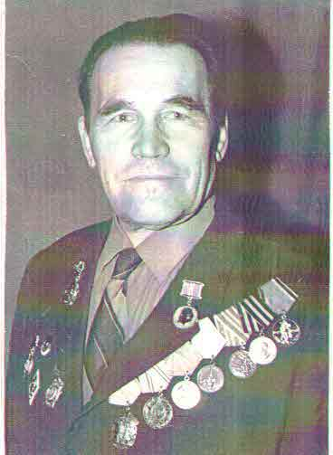
Родился в Чувашской АССР, окончил Пермский государственный медицинский институт в 1938 году. С 1941 по 1944 год служил хирургом медсанбата в звании военврача III ранга на Ленинградском, Юго-Западном и 2-м Украинском фронтах. После войны продолжил работать врачом-хирургом и главврачом в Куединской и Еловской районных больницах, где организовал новые отделения и значительно улучшил медицинскую помощь в районе.
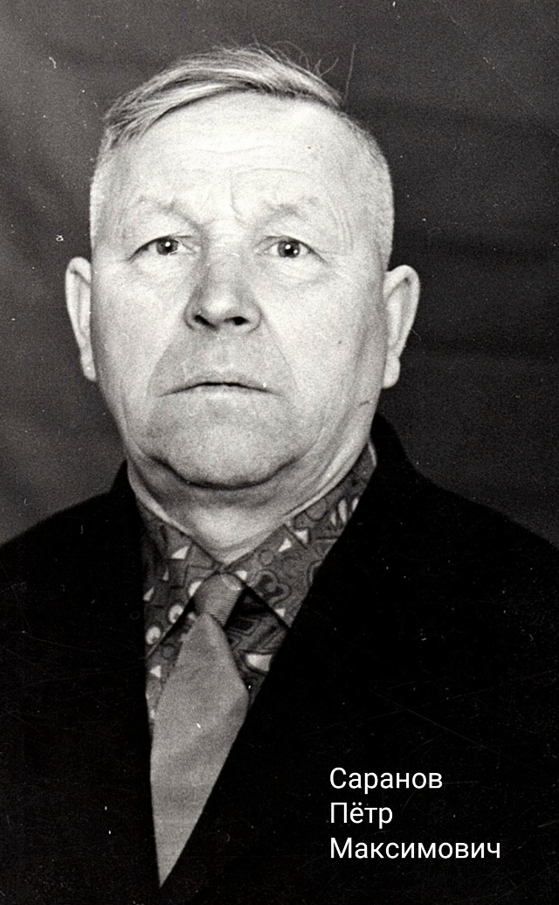
Родился в Еловском районе, окончил фельдшерско-акушерскую школу в Молотове (ныне Пермь). С 1940 года служил фельдшером в 231-й стрелковой дивизии на Дальнем Востоке. Награждён медалью «За победу над Японией» и шестью юбилейными медалями Победы. После войны 32 года работал на ФАПе в селе Крюково, стал ветераном труда.
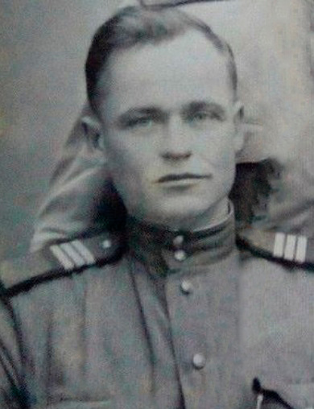
Фельдшер, участвовал в боях на Западном фронте. После тяжёлого ранения прошёл лечение в пермском госпитале, затем вернулся к медицинской службе. После войны работал в сельской местности, внедрял новые методы оказания первой помощи.
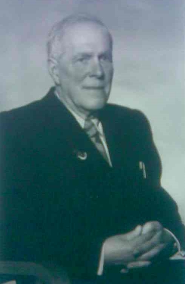
Его работа в институте играла важную роль в подготовке фармацевтов и разработке лекарственных форм, особенно в условиях военного времени, когда было критически важно обеспечить медицинские учреждения необходимыми препаратами.
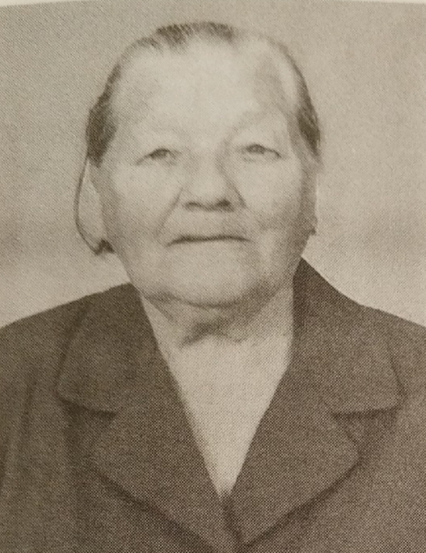
Служила в ЭГ № 3136 прошла боевой путь Украина, Молдавия, Венгрия. Военкоматом была мобилизована и направлена в эвакогоспиталь № 3136. В 1943 году вместе с госпиталем ушла на фронт. После войны 8 лет работала в Усольской больнице стоматологом, а затем в туберкулезном отделении Усольской ЦБР медсестрой.
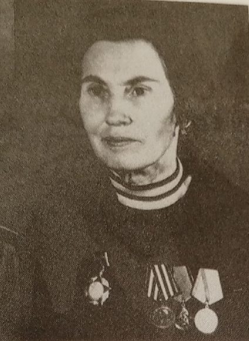
Была призвана 13. 04. 1942 г. Ворошиловским РВК Молтовской обл. Служила в 8-ом полку 2-ой дивизии аэростатного заграждения Московского военного округа. После войны 8 лет работала в Усольской больнице стоматологом, а затем инспекторм районного отдела социального обеспечения Воршиловского райиспокома.
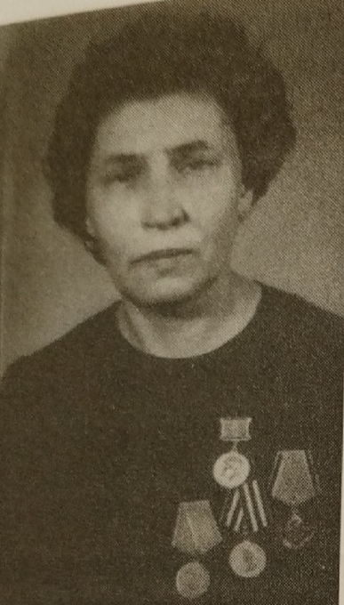
Прошла курсы медсестер при Усольской больнице 1941 г. Была мобилизована в ЭГ № 3142 в мае 1942. Прошла боевой путь Воронежская обл., Сталининградская обл., Курская обл., Украин, Белоруссия, Польша. В годы войны служила в гспиталях: вначале в поселке Огурдино, а дальше был фронт.
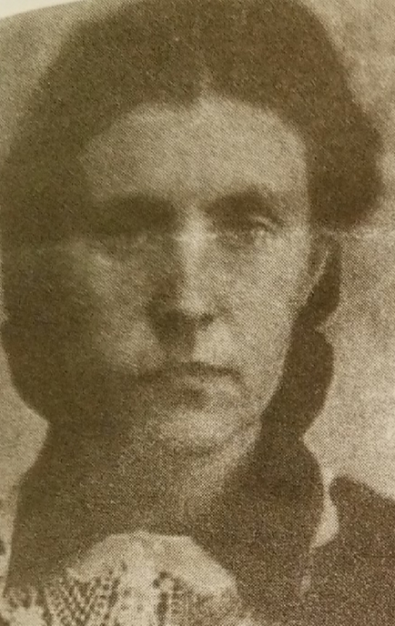
Была призвана 20. 08. 1943 г. служила в ЭГ № 1690. Прошла боевой путь Пензенская обл., г. Сердобск, Воронежская обл., г. Калач, Украина, Венгрия.
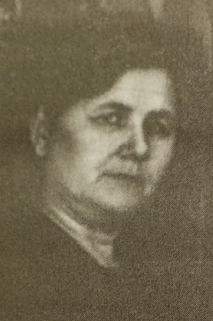
Была призвана в августе 1941 г. Служила в ЭГ № 3136(Усолье) перевязочной медсестрой. Прошла боевой путь Украина, г. Санжеры, Молдавия, Венгрия, г. Мишкольц. После войны работала в доме отдыха "Урал", В Усольской ЦБР медстатистом.
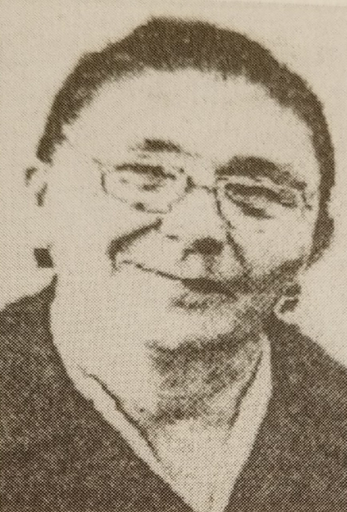
Была призвана 01. 01. 1942 г. Служила врачом в/ч 37300 - с 26. 10. 1944 по 30. 09. 1945 г., врач-ординатор ЭГ № 5942. После войны работала врачом Усольской амбулатории, затем главврачом амбулатории, зав. терапевтического отделения, а потом врачом-терапевтом областной клинической больницы.
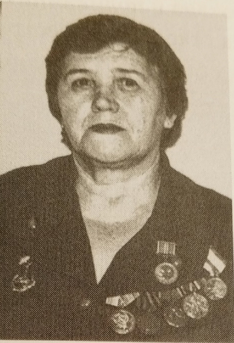
Была призвана в июле 1943 г. Молтовским РВК. Получила военное звание сержант, командир отделения связи. Прошла боевой путь Пермь, Украина, Белоруссия, Даугавпилс, Шяуляй, Рига, Клайпеда. После войны работала старшей медсестрой в поликлинике Усольской ЦБР.
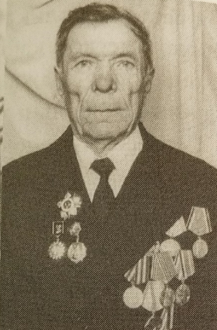
Был призван в июле 1941 годав 208-й кавалерийский полк, 61-й кавалерийный полк, 11-й кавалирийский корпус. После войны работал в санэпидемистанции г. Усолье.
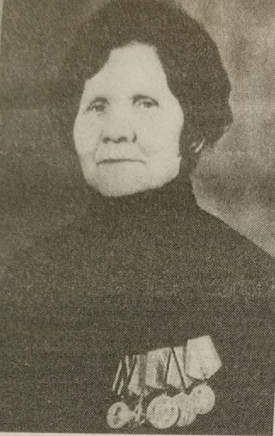
Была призвана в 02.08 1941г. Служила до 12. 10. 1942 г. медсестрой эвакогоспиталя № 1486, с 29.10. 1942 по 01. 10. 1945 г. медсестрой ЭГ № 3136. Прошла боевой путь Украина, Молдавия, Румыния, Венгря. Была демобилизирована в декабре 1945 г.
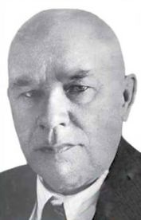
Известный терапевт и физиолог. В годы войны занимался адаптацией методик лечения сердечно-сосудистых заболеваний в условиях стресса и недостатка питания. Его разработки использовались при реабилитации бывших узников концлагерей и партизан, прибывших в пермские госпитали.
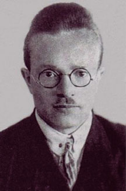
Работал в эвакогоспиталях как действующий хирург, консультант и научный руководитель. Он лично произвёл более 3000 сложных операций и вернул к активной полноценной жизни тысячи людей. По его инициативе, высказанной ещё в 1942 году и получившей одобрение Наркомздрава СССР и ЦК партии, в тяжёлые военные годы в СССР началось развёртывание сети специализированных отделений, а затем и госпиталей восстановительной хирургии.
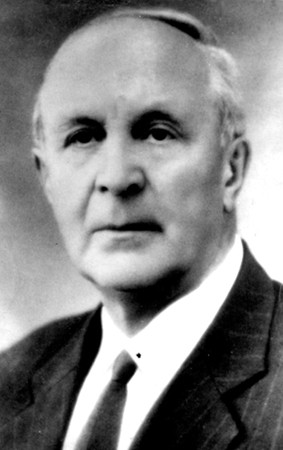
Специалист по инфекционным болезням. Возглавлял борьбу с эпидемиями в госпиталях и эвакопунктах. Разработал схемы дезинфекции и карантинных мероприятий, что позволило снизить уровень инфекционной заболеваемости среди раненых и персонала.
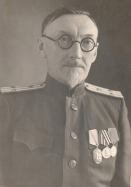
Психиатр и невролог. Работал с бойцами, страдавшими от «шоковых состояний» и посттравматических расстройств. Разрабатывал методы психотерапевтической реабилитации, что было новаторством для того времени.
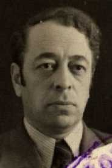
Профессор, специалист по внутренним болезням. Руководил терапевтическими отделениями в эвакогоспиталях, внедрял методы лечения анемии и истощения у раненых. Его разработки помогли снизить уровень смертности от осложнений у ослабленных бойцов. Наладил производство химичкеских лекарственных препаратов в области.
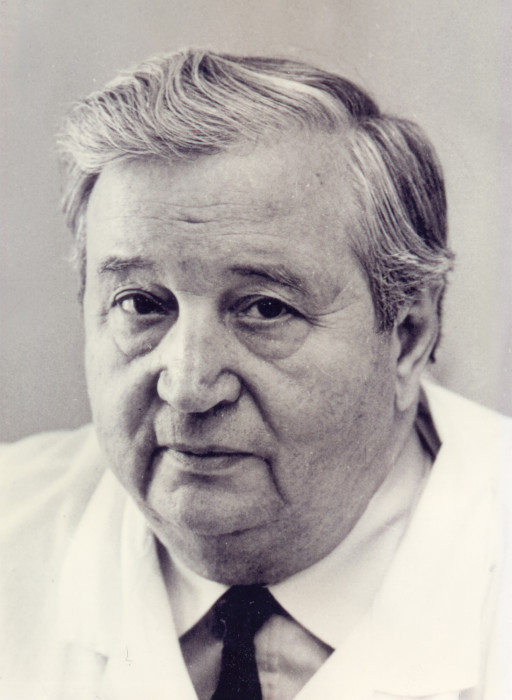
Родился в Одессе, окончил Одесский медицинский институт (1940). С началом войны мобилизован в Красную Армию как военно-полевой хирург. Позже направлен в Соликамск и Березники в качестве начальника медчасти стройуправления МВД. В Березниках стал хирургом, а затем — главным врачом городской больницы № 1 (1955–1965). В годы войны оказывал экстренную помощь раненым, применял новаторские методы. Позже стал академиком АМН СССР, основал научную школу хирургии. Имя Вагнера присвоено Пермскому медицинскому университету и Березниковской больнице.
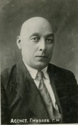
Военврач II ранга, с августа 1941 года — начальник Управления медицинского обеспечения № 44 (МЭП-44) в Перми. Координировал работу всех эвакогоспиталей Прикамья. С января 1943 года — полковник медицинской службы. Его руководство обеспечило слаженную работу медицинского тыла.
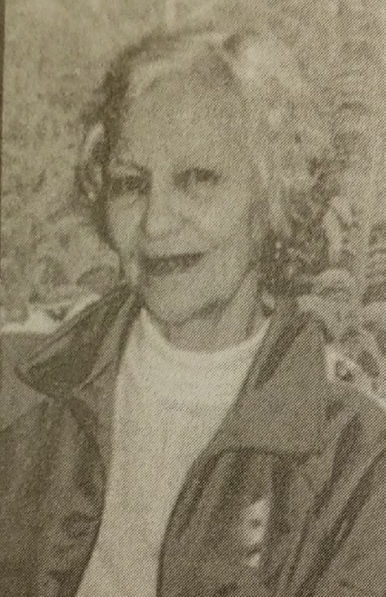
Окончила курсы медсестер. Была призвана в августе 1941 г.. Служила в городе Улан-Удэ, ЭГ № 1486, с сентября 1942 г. по октябрь 1946 г. ЭГ № 3136. Получила военное звание сержант медицинской службы. После войны работала: Усольский детский дом (медсестра); Усольский детский костно-туберкулёзный диспансер; Усольская больница (гипсовый техник в хирургическом отделении); Березниковская больница; Березниковский завод железобетонных конструкций; Березниковское ПО «Азот».
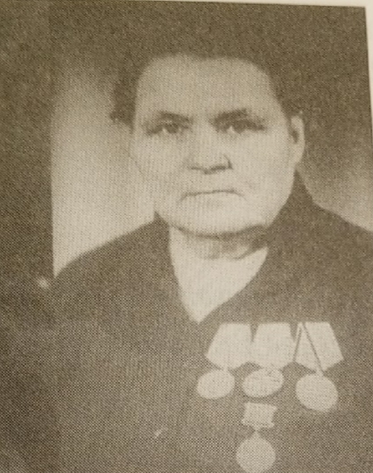
Была призвана 01. 09. 1942 г. Чердынским РВК. Служила в ЭГ № 2346. Прошла боевой путь г. Березники, г. Совец Калининградской обл., г. Велиши Смоленской обл., г. Невель Псковской обл. Получила звание вольнонаемная.
Фармацевт, работала в аптеке при эвакогоспитале № 3149. Участвовала в производстве антисептиков, мазей на основе турбинного масла и других заменителей. Её труд помогал снабжать лекарствами не только Пермь, но и соседние регионы. Вот ещё биографии медработников из Перми и Березников, чья деятельность в годы Великой Отечественной войны сыграла важную роль.
Терапевт, еврей по происхождению, эвакуирован в Пермь из Киева в 1941 году. Работал в эвакогоспитале № 3129 в Березниках. Занимался лечением бойцов с туберкулёзом, малярией и истощением. Его опыт стал основой для создания программы реабилитации ослабленных солдат.
Фельдшер, уроженец села Красногорское. С 1941 года — фельдшер в медсанбате, затем эвакуирован в Пермь после контузии. Продолжил службу в эвакогоспитале № 3143, оказывал первую помощь при поступлении раненых.
Фармацевт, заведовал аптекой при эвакогоспитале № 3147. Организовал выпуск антисептиков, мазей и настоек из местного сырья. Под его руководством была налажена замена ваты на целлюлозу, что позволило сэкономить дефицитный материал.
Физиотерапевт, работала в эвакогоспитале № 3149. Применяла методы электрофореза, ультрафиолетового облучения и парафинотерапии для ускорения заживления ран и восстановления мышц. Её методики помогли тысячам бойцов вернуться к трудовой деятельности.
Психиатр, работал с бойцами, страдавшими от «истощения нервной системы» (тогда так называли ПТСР). Разрабатывал методы психотерапевтической поддержки, включая беседы, музыку и трудовую терапию. Его подходы позже легли в основу военной психиатрии.
Медсестра-анестезистка, работала в операционной эвакогоспиталя № 3129 в Березниках. Обеспечивала безопасное проведение наркоза при сложных операциях. Её профессионализм спас десятки жизней.
Операционная медсестра, работала с Е.А. Вагнером. Воспоминания Сурсяковой стали важным источником о внедрении метода реинфузии крови — возвращения собственной крови пациента после фильтрации. До этого её выливали, теряя жизненно важный ресурс.
Хирург, уроженец Перми. Окончил Пермский медицинский институт. В годы войны работал в эвакогоспитале № 3149. Специализировался на травматологии и огнестрельных ранениях. Позже возглавил хирургическое отделение в Пермской областной больнице, внедрял методы, отработанные в военное время.
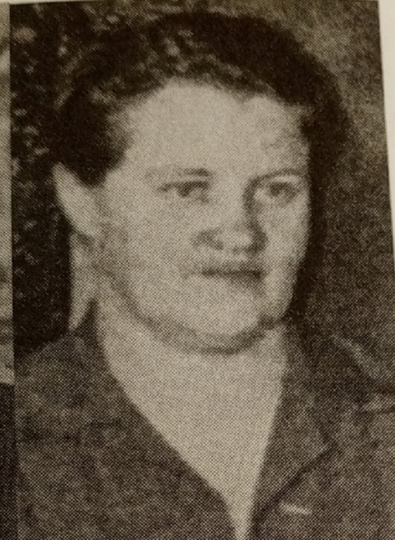
Была призвана 29.07. 1941 г.. Служила в г. Улан-Уде. После войны работала в г. Иванова в лагере военопленных. С 1949 г. работала в детском отделении Усольской ЦБР, затем старшей медсестрой инфекционного отделения Усольской ЦБР.
Фармацевт, работала в аптеке при эвакогоспитале № 3149. Участвовала в производстве антисептиков, мазей на основе турбинного масла и других заменителей. Её труд помогал снабжать лекарствами не только Пермь, но и соседние регионы. Вот ещё биографии медработников из Перми и Березников, чья деятельность в годы Великой Отечественной войны сыграла важную роль.
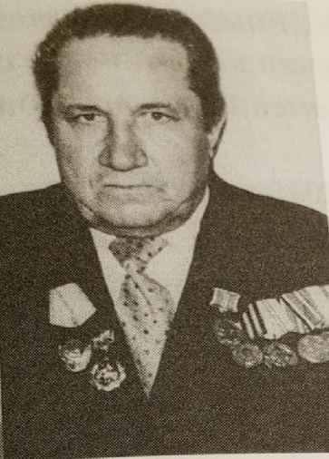
Был призван в 1942 г.. Служил в 310-ой стрелковой дивизии, 1080-ой стрелковой роте. Прошел боеой путь Волховский фронт, Карело-Финский Фронт. Получил звание сержант, командир отделения.
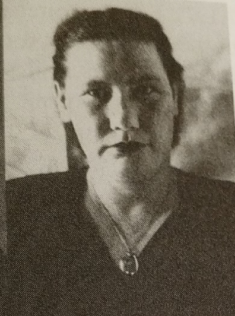
Была призвана в 1943 г.. Служила в ЭГ 3 1022 г. Кандалакша Мурманской обл. После войны работала главным врачем детского костно-туберкулезного санатория в Усолье, костно-туберкулезном санатории г. Геленджик, детской поликлинике г. Березники педиатром, рентгенологом, сезонном санатории "Ключи".
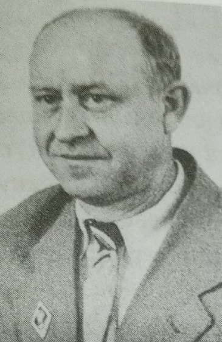
Был призван в РККА 19.10.1939 после окончания Пермсокого медицинского института. После войны возглавил санэпидемстанцию В Усольской больнице.
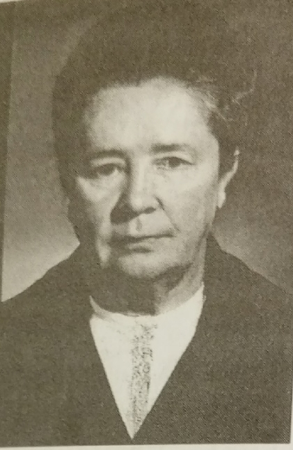
Была призвана 28.06.1941 г.. Служила в отдельной мотострелковой роте 129-ого отделения стрелковой бригады, ЭГ № 3145, 328-ом медсанбате 226-ой стрелковой дивизии. Участвовала в боевых действиях с 12.05.1942 г. - Западный фронт, с 15.11.1942 г. - Воронежский фронт.
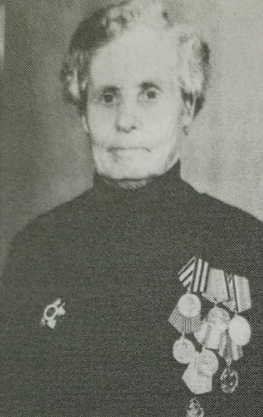
Была призвана в 1941 г.. Служила в г. Москва войско ПВО. После войны работала в физкабинете Усольской ЦБР.
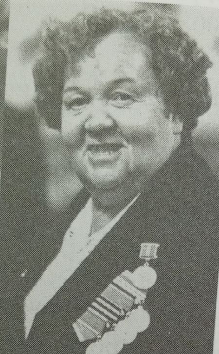
Находилась в составе действующей армии с 20.03.1942. Служила в ППГ №751, на Западаном фронте(с мая 1942 по июль 1943. Затем была переведена на 3-ий Белорусский фронт в качествве старшей медсестры инфекционного госпиталя. С августа по сентября 1945 несла службу на 1-ом Дальневосточном фронте
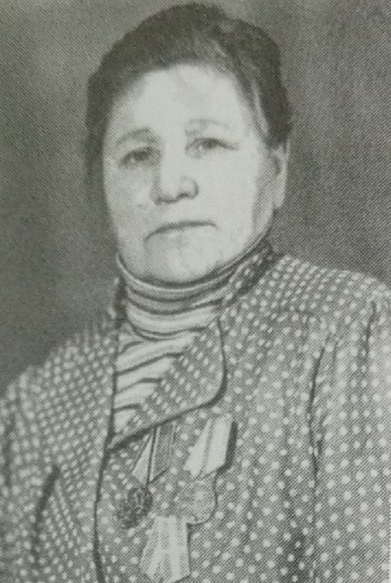
Призвана в РККА в ноябре 1941 года. Служила в ЭГ №3136 59-ой Армии Украиснкого фронта; в сортировочном госпитале №1036 2-ого Украинского фронта. После войны работала в Усольской ЦРБ
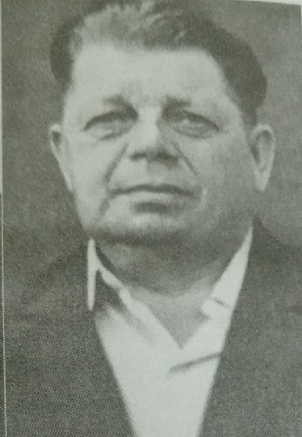
Был призван 28.12.1942 г. Ворошиловским РВК. Служил в 6-ом запасном стрелковом полке УрВО, 1004-ом стрелковом полке, 305-ой стрелковой дивизии 1-ого Уральского фронта. После войны работал заведущим в Пыскорской больнице.
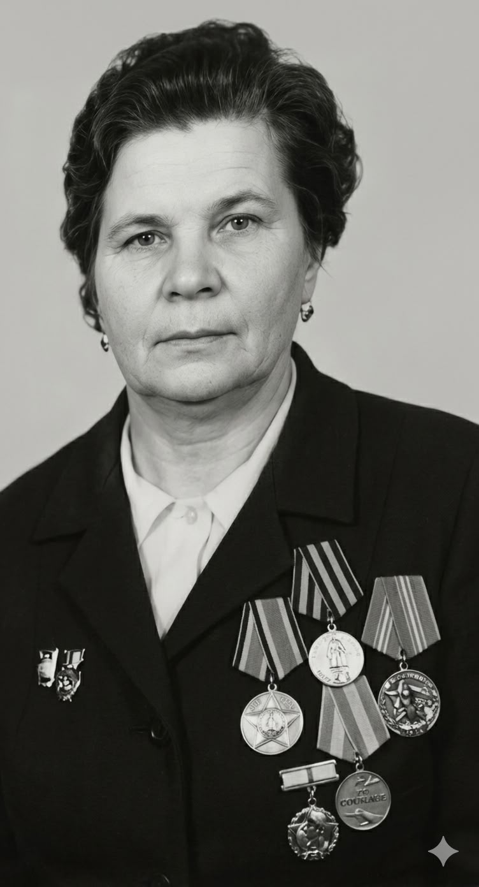
Служила в действующей армии с 30.01.1942 по 15.08.1944 на военно-санитарном поезде №120, после войны работала заведующей Урольским райсобесом
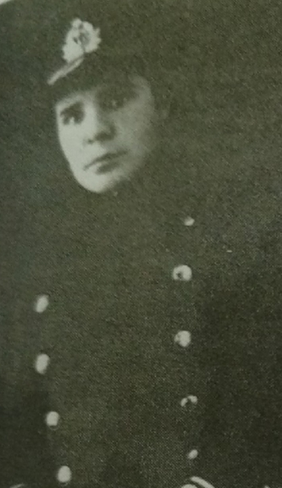
Была медицинской сестрой морского госпиталя Северного флота, остров Рыбачий. В начале 1960-х годов работала фельдшером в санаторном детском саду, г. Усолье. Детский сад располагался в деревянном здании по улице Пушкина. В настоящее время на этом месте располагается жилой дом. Затем переехала в Березники и там работала до 80-ти лет участковой медсестрой в детской консультации.
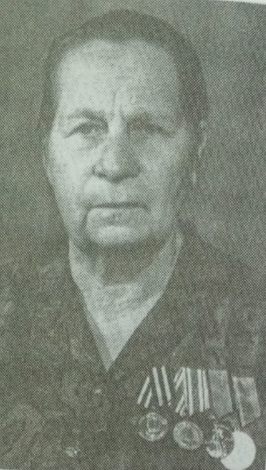
Была призвана 19.07.1943 г.. Служила в фронтовом эвакуационном госпитале № 3108. затем переименован в ЭГ № 3801(09.08.1945 г.). Прошла боевой путь с 29.10.43 г. по 26.02.44 г. - 4-й Украинский фронт, с 15.03.44 г. по 31.05.44 г. - 3-й Украинский, затем Карельский фронт, с 30.07.44 г. по 15.11.44 г. - резарвный фронт. После войны работала педиатром в Усольской больнице, врачом в детском санитарном саду противотуберкулезного профиля г. Березники.
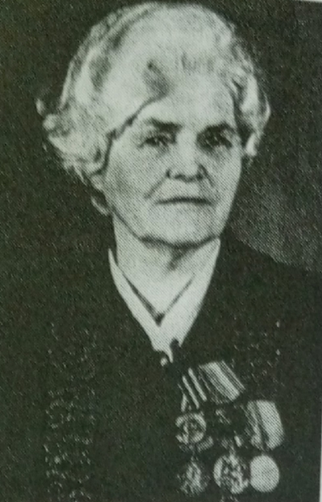
Была призвана в июле 1941 г.. Служила на 2-ом Украинском фронте, в военно-полевом госпитале медсестрой. Прошла боевой путь Украина, Венгрия, Румыния. После войны работала в санатории "Соляные ванны" детским костно-туберкулезном диспансере, хирургическом отделении Усольской больницы.
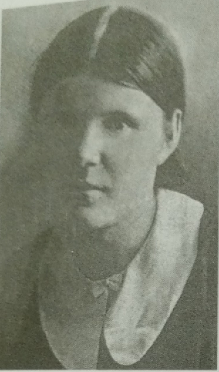
Служила санитаркой госпиталя. Прошла боевой путь Молотов, Краснокамск, войну окончила в Венгрии. После войны работала в Усольской районой больнице медсестрой, в п. Быстринская база - заведущей детским садом.
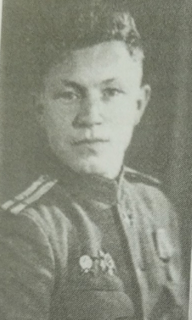
Был призван в РККА 27.09.1941. Был трижды ранен, но после каждого ранения снова возвращался на фронт. Служил в лыжном батальоне 289-ой стерлковой дивизии Карельского фронта, 22-о1 отдельный дорожный строоительный батальон Брянского фронта, 1028-ой стрелковый полк 260-о1 стрелковой дивизии 47-ой Армии Белорусского фронта, санитарный взвод 16-ой механизированной дивизии 3-ей Ударной Армии
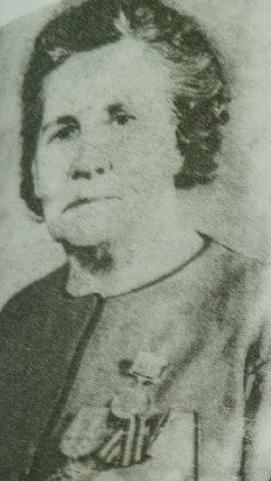
Был призван в РККА 09.10.1941. С 09.10 1941 по 10.09.1943 работала старшей медсетсрой госпиталя №4015. С 17.10.1943 была призвана в действующую армию. По май 1945 служила в ЭГ №3136 медицинского эвакопункта №46 2-ого Украинского фронта
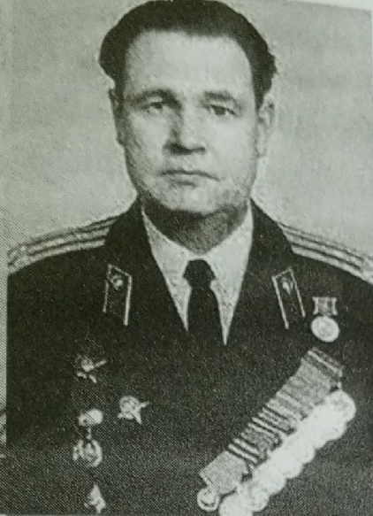
Был призван в 1939(1940) г.. Служил в Отдельном военном госпитале 321-ого Забайкальского военного округа, ЭГ 87 ФЭП 50/87; ЭГ 77 ФЭР 2-ого Белоруского фронта. Получил военское звание полковник мед. службы. Прошел боевой путь Ленинградский фронт, 2-й Белорусский фронт, Польша, Германия.
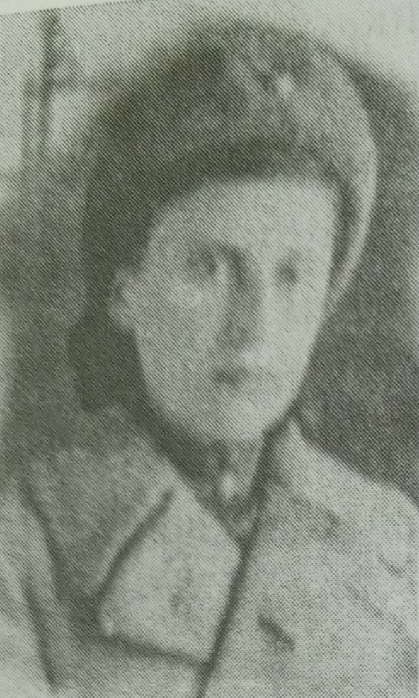
20 Июня 1941 поступила на работу учеником лаборната в ЦХЛ Березниковского азотно-туковского завода.На заводе в конце 1941 были организованы курсы медсестер и сандружиниц. Вера Ивановна закончила эти курсы и в декабре 1942 года ушла на фронт.
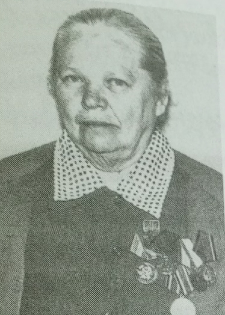
Была призвана в 1941 г.. Служила в Амурской флотилии, в хирургическом полевом подвижном госпитале № 5174. После войны работала участковым фельдшером-педиатром в детской консультации города Усолье.
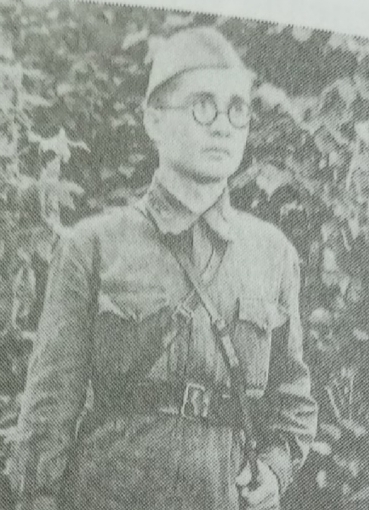
Призван в ряды РККА в мае 1942 года после окончания Молотовского медицинского института. Служил в 1245-ом истребительном противотанковом артиллерийском полку. Пропал без вести в марте 1943 года.
Если у вас есть информация о медиках Прикамья, заполните форму ниже: